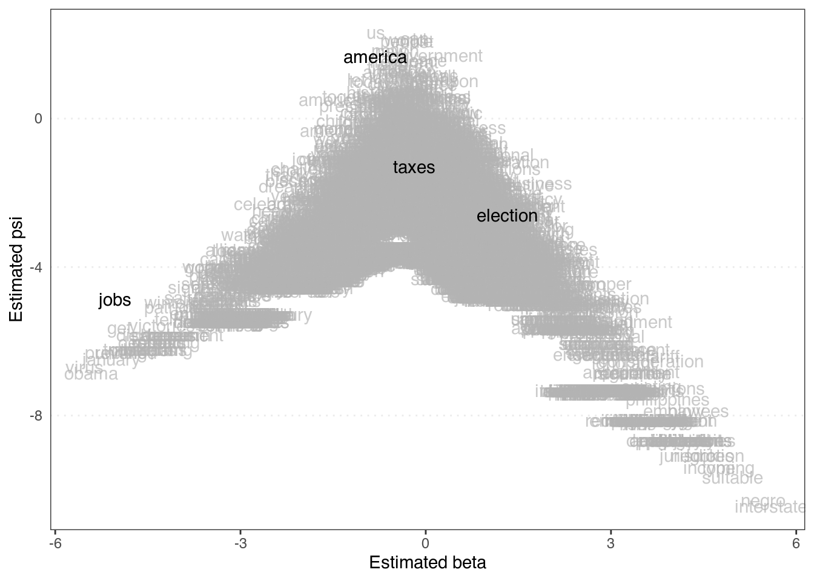
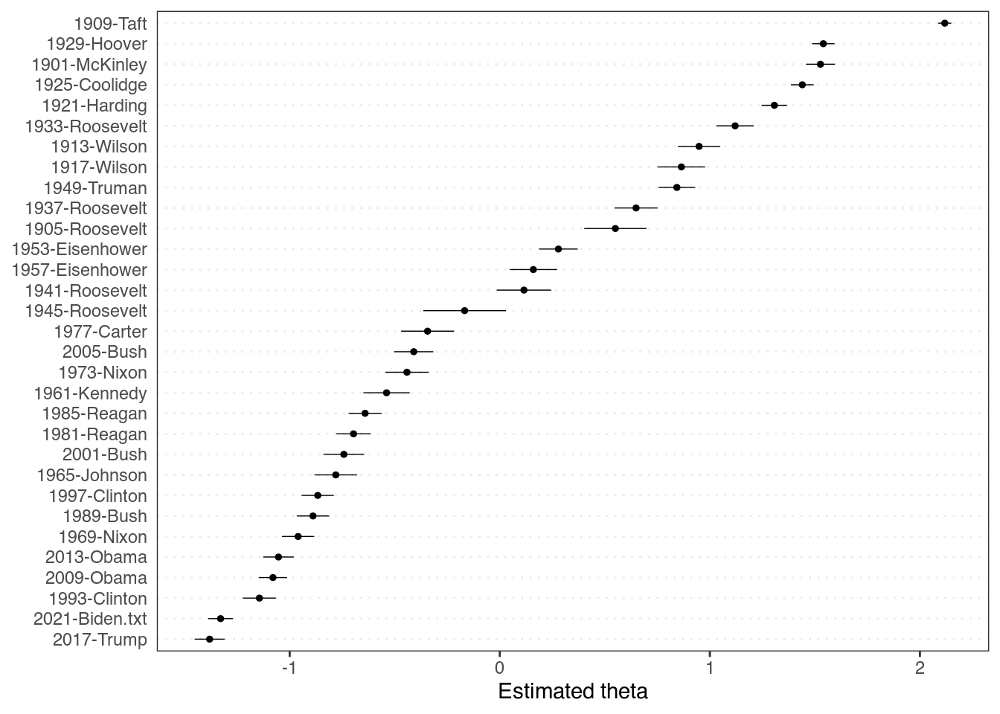

Different from Wordscores, for Wordfish we do not need any reference text. Instead of this, the method using a model (based on a Poisson distribution) to calculate the scores for the texts. The only thing we have to tell Wordfish is which texts define the extremes of our scale. While this might seems very practical, it also leaves us with a problem: which scale do we want? For example, let us have another look at the corpus of inaugural speeches of American presidents we saw earlier. What scale should we expect? Let us, for now, say that we care about a general left-right position. As benchmarks, we then set the 1965 Johnson speech as the most “left” and the 1985 Reagan speech as the most “right.” Also, we set a seed as the model draws random numbers and we want our work to be replicable:
set.seed(42)
data_inaugural_dfm@Dimnames$docs
wordfish <- textmodel_wordfish(data_inaugural_dfm, dir = c(17,
22))
summary(wordfish)Here, theta gives us the position of the text. As with Wordscores, we can also calculate the confidence intervals (note that theta is now called fit):
pred_wordfish <- predict(wordfish, interval = "confidence")
pred_wordfish## $fit
## fit lwr upr
## 1901-McKinley 1.5264549 1.45790117 1.5950087
## 1905-Roosevelt 0.5503249 0.40223178 0.6984181
## 1909-Taft 2.1183666 2.08740335 2.1493298
## 1913-Wilson 0.9487067 0.84753556 1.0498779
## 1917-Wilson 0.8645950 0.75120033 0.9779896
## 1921-Harding 1.3071772 1.24653710 1.3678173
## 1925-Coolidge 1.4402120 1.38616969 1.4942542
## 1929-Hoover 1.5400842 1.48638959 1.5937789
## 1933-Roosevelt 1.1202695 1.03130137 1.2092377
## 1937-Roosevelt 0.6488960 0.54692619 0.7508658
## 1941-Roosevelt 0.1151337 -0.01441162 0.2446789
## 1945-Roosevelt -0.1673134 -0.36404388 0.0294171
## 1949-Truman 0.8431987 0.75592790 0.9304694
## 1953-Eisenhower 0.2792604 0.18727234 0.3712484
## 1957-Eisenhower 0.1598369 0.04700292 0.2726709
## 1961-Kennedy -0.5387860 -0.64916020 -0.4284118
## 1965-Johnson -0.7804433 -0.88215746 -0.6787291
## 1969-Nixon -0.9598015 -1.03655447 -0.8830485
## 1973-Nixon -0.4416846 -0.54428665 -0.3390825
## 1977-Carter -0.3436878 -0.46940309 -0.2179725
## 1981-Reagan -0.6960482 -0.77775955 -0.6143369
## 1985-Reagan -0.6409237 -0.71946264 -0.5623847
## 1989-Bush -0.8890203 -0.96614097 -0.8118997
## 1993-Clinton -1.1441087 -1.22269262 -1.0655248
## 1997-Clinton -0.8663188 -0.94294521 -0.7896924
## 2001-Bush -0.7422147 -0.83928343 -0.6451460
## 2005-Bush -0.4094409 -0.50296128 -0.3159205
## 2009-Obama -1.0796208 -1.14695763 -1.0122840
## 2013-Obama -1.0531958 -1.12609628 -0.9802953
## 2017-Trump -1.3810308 -1.45235286 -1.3097088
## 2021-Biden.txt -1.3288773 -1.38765502 -1.2700996As with Wordscores, we can also plot graphs for Wordfish, using the same commands. The first graph we will again be looking at is the distribution of the words, which here forms an “Eifel Tower” like graph:
textplot_scale1d(wordfish, margin = "features", highlighted = c("america",
"jobs", "taxes", "election"))
And then we can do the same for the documents as well. Note that we can also make a similar graph to the one we made ourselves above (just replace pred_mv with pred_wordfish):
textplot_scale1d(wordfish, margin = "documents")
Looking at the results here gives us an interesting picture. Remember that we chose our benchmark texts to look at the left-right position of our texts? Here, we see that both these texts (the 1965 Johnson and 1985 Reagan) are quite close to each other. Sticking with our interpretation that Reagan is more right-wing than Johnson, this would mean that the 1909 Taft address was the most right-wing and the 2017 Trump text the most left-wing. Whether this is true is of course up to our interpretation.